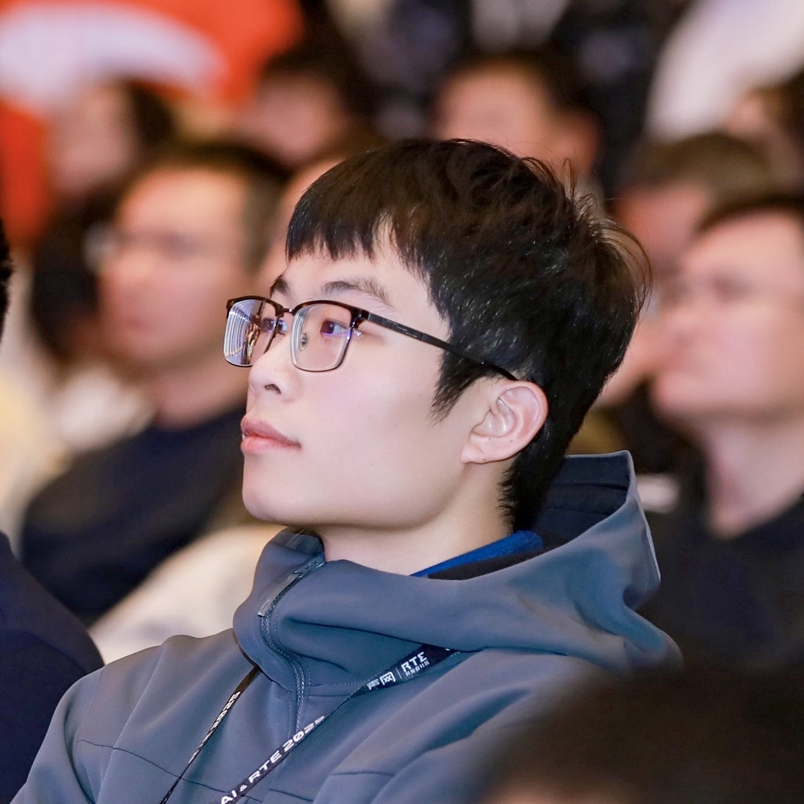

RK3588 Edge AI
Deploying computer vision and local language models on RK3588 edge hardware, using YOLO, RKNN, and efficient inference.
Hi, I'm FuTseYi, also known as Shine. I'm a Red Bird MPhil student at The Hong Kong University of Science and Technology (Guangzhou), with a background in automation.
I enjoy connecting research with real-world engineering — from visual perception and on-device AI to intelligent systems that can operate beyond the lab.
Currently exploring new things, occasionally pretending I know what I’m doing.
LANGUAGES English · Mandarin · Cantonese
Freiheit als Autonomie — Freedom through autonomy.
People can retire, but the spirit cannot retire. - Gundam

Master of Philosophy · Red Bird MPhil Program
Bachelor's Degree · Automation
My interests are centered on how intelligent algorithms meet physical systems and practical applications.
Intelligent agents, robotic perception, and interaction with the physical world.
Object detection, multimodal perception, and visual understanding.
Efficient inference, embedded computing, and deployment on resource-constrained hardware.
Deploying computer vision and local language models on RK3588 edge hardware, using YOLO, RKNN, and efficient inference.
An AI-assisted crop disease detection application combining image recognition with web technologies.
A lightweight visitor analytics service built with Cloudflare Workers and D1.
Occasional notes on AI, engineering, open source, and lessons learned while building.
Read the latest notesBrowse all articles and technical experimentsAlways happy to connect about research, projects, open source, and ideas.